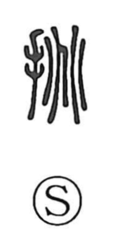

挑

Uncategorized
Kun: idomu | On: cho
to challenge ・ to provoke
Explanation
This is a phono-semantic character: the hand element indicates an act performed with force, while 兆, whose ancient form depicts the heat-crack lines on a tortoise plastron used in divination, supplies the sound and the image of something made to bend under pressure. From the notion of applying strong force so that an object yields, the character came to mean confronting or pressing another—hence to challenge and to provoke. It appears in compounds such as 挑戦 and 挑発. A related graph, 跳, pairs 兆 with the foot element to express a sudden, forceful leap.